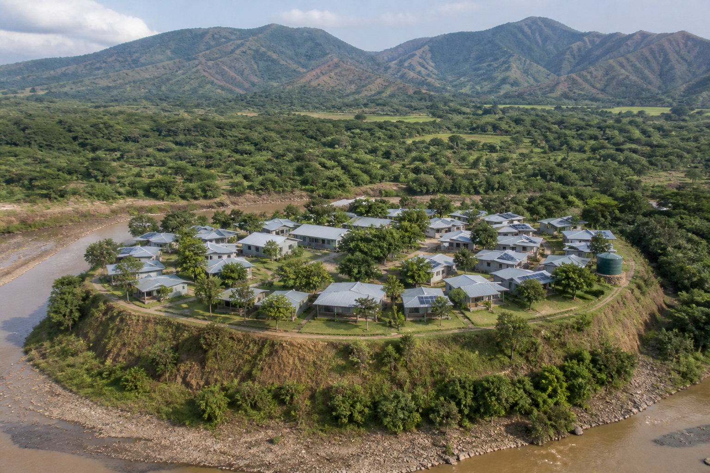
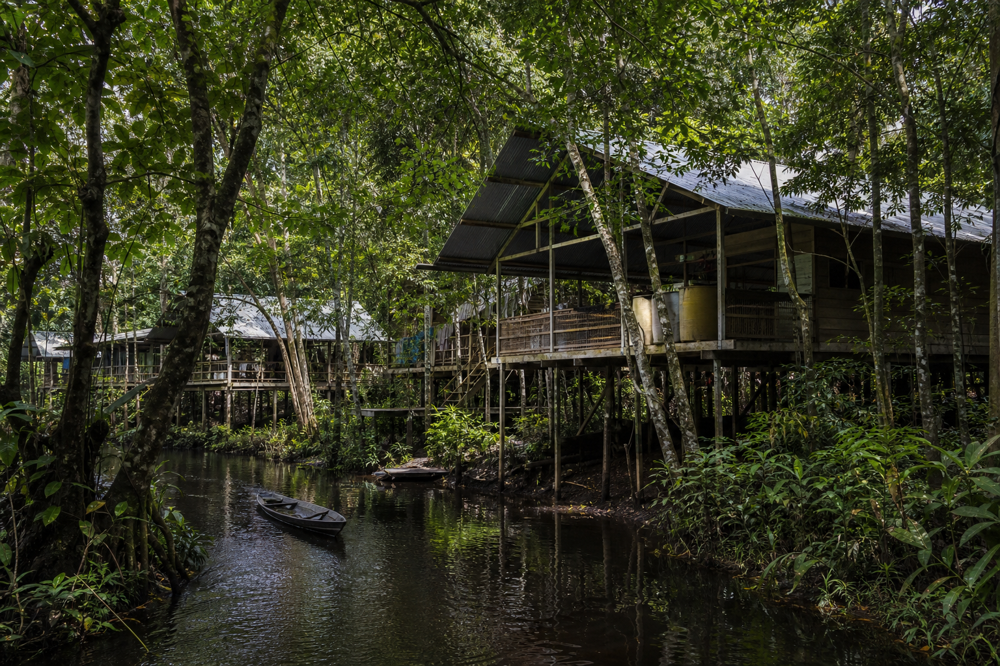

Esto no es un lote. No es un caserío disperso. No es una nave en el
valle. Es un corte tipo: una primera célula compacta, a pie, en
ladera pereirana. Cubierta ligera: lámina anclada, no teja de barro.
El patio es umbral, no estadio. El núcleo de ciudad se dibuja después.
Sin folio, sin amenaza y sin el sí de quien habita, no se planta.
Deslotear.
El urbanismo vende manzana, vista y plusvalía. Aquí se deslotea:
primero un hábitat que cierra agua, luz, comida, escuela y salud.
Luego la red. El núcleo, después.
Municipio de trabajo: Pereira, hipótesis.
El predio es —.
El dibujo no adjudica. El cálculo junta edificio, cimentación y talud.
Plano tipo, no catastro
Cuarenta hogares en curva de nivel. Huerta, escuela y casa de salud
a pie. El óvalo es relación, no lindero. Sin nombre de vereda.
Siete capas del corte
De arriba hacia abajo. Sin medidas: aún no hay predio.
Franja vegetada y dren interceptor.
Camino de inspección y evacuación en curva de nivel.
Cubierta-terraza ligera, registrable.
Núcleos rígidos a cimentaciones calculadas.
Módulos livianos con juntas.
Terrazas productivas sin saturar el talud.
Dren colector, fuera de la masa inestable.
El dibujo de guadua ayuda a ver. El kit de ladera no es palafito:
terrazas, núcleos alineados, cubierta ligera. No teja de barro:
en el sismo esa masa cae. NSR-10 no certifica esta forma sin cálculo.
Abrir el corte v0.2.
El kit cambia con el aire y el suelo
Misma anatomía. Tres humedades. Tres montañas —o ninguna.
Pereira · ladera
1.411 m. 21 °C. 2.750 mm de lluvia. Aire húmedo de montaña.
Bahareque y guadua livianos: menos inercia sísmica. NSR-10 Títulos E y G.
Alero y primer lavado: la lluvia es agua y es empuje sobre el talud.
Ventilar, no sellar: hongos y humedad mandan el detalle.
No cicatriz de alud ni fondo de cañada.
Concejo de Pereira, datos generales; NSR-10; UCP 2024, vivienda en ladera.

Valle · crecida
900–1.100 m. Calor. Terraza alta. El río manda el retiro.
Sombra primero: alero, cubierta ventilada, árbol.
Piso sobre la crecida de diseño. Hidráulica, no una distancia genérica.
Estrato inferior lavable. Lo crítico, arriba.
Huerta de mosaico; no caña única.
VISION.md · PAPER-v0.2, kit de valle. RAS y estudio hidráulico, pendientes.

Chocó · río-selva
0–100 m. Lluvia, dosel, río-camino. El consejo es autoridad.
Alto relativo al río. Palafito: humedad, crecida, bicho, paso.
Gran cubierta, cisterna tapada. Negras fuera del río.
Más batería: más nubes. Piezas que viajan por agua.
El monte vuelve solo: podar, sembrar, comer. No palma ni potrero.
Ley 70 de 1993 · PAPER-v0.2, kit Chocó. Sin el consejo, no hay sitio.
Cómo suena la ciudad
Para arquitectas
Edificio, cimentación y ladera: un solo cálculo.
Dibuja el corte, no el lote. Tres kits. RCD solo si se ensaya.
Se costea la primera que vive.